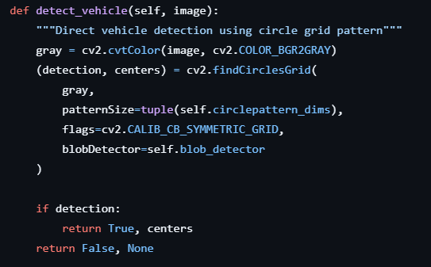

Screen recording of the rqt_image_view showing the image augmentations applied when detecting AprilTags
This video shows the Duckiebot detecting the closest AprilTag, drawing a box around it, and displaying its corresponding id number
Image Processing Steps
Image Conversion from CompressedImage to OpenCV Format
Justification: The incoming image is in a compressed format (ROS CompressedImage), so it must be converted to an OpenCV-compatible format (e.g., a NumPy array) for further processing.
Image Undistortion
Justification: Camera lenses introduce distortion, which can affect the accuracy of AprilTag detection. Undistorting the image using the camera's intrinsic parameters ensures geometric correctness, improving detection reliability.
Grayscale Conversion
Justification: AprilTag detection works on grayscale images. Converting the image to grayscale simplifies processing and reduces computational overhead, as color information is unnecessary for detection.
AprilTag Detection
Justification: This step detects AprilTags in the grayscale image using the dt_apriltags library. It provides tag ID, corners, and pose information, essential for the node's functionality.
Closest Tag Selection
Justification: If multiple tags are detected, the node selects the closest one based on the Euclidean distance of the translation vector. This ensures the robot focuses on the most relevant tag in its vicinity.
Justification of your apriltag detection rate
Image Acquisition
The node subscribes to a ROS topic (/camera_node/image/compressed) to receive compressed images from the camera. This step captures the raw image data from the camera, which serves as the input for AprilTag detection.
Image Conversion
The compressed image is converted from a ROS CompressedImagemessage to an OpenCV-compatible format (e.g., a NumPy array) using the cv_bridge library. OpenCV is used for image processing, so the image must be in a format that OpenCV can manipulate.
Image Undistortion
The image is undistorted using the camera's intrinsic parameters (camera_matrix and distortion_coeffs), which are obtained from the ROS CameraInfo message. Camera lenses introduce distortion, which can affect the accuracy of AprilTag detection. Undistorting the image corrects these distortions, ensuring that the image is geometrically accurate.
Grayscale Conversion
The undistorted image is converted from color (BGR) to grayscale using OpenCV's cvtColor function. AprilTag detection works on grayscale images, so this step simplifies the image data and reduces computational overhead.
AprilTag Detection
The grayscale image is passed to the dt_apriltags detector, which performs the following steps:
Edge Detection: The detector identifies edges in the image to locate potential tag candidates.
Quad Decoding: It decodes the detected quads (four-sided polygons) to determine if they correspond to valid AprilTags.
Tag Decoding: The detector extracts the binary payload from the tag and matches it against known tag families (e.g., tag36h11).
Pose Estimation: For each detected tag, the detector estimates its 3D pose (position and orientation) relative to the camera using the camera's intrinsic parameters and the known tag size.
This step identifies the tags in the image, extracts their IDs, and estimates their positions in the environment.
Closest Tag Selection
Process: If multiple tags are detected, the node calculates the Euclidean distance of each tag's translation vector (pose_t) and selects the closest one.
Purpose: This ensures that the robot focuses on the most relevant tag in its immediate vicinity, which is useful for navigation or interaction tasks.
Image Augmentation
Process: The node augments the original image by drawing bounding boxes and tag IDs for the detected tags using OpenCV functions like cv2.line and cv2.putText.
Purpose: This step provides visual feedback, making it easier to debug and verify the detection results.
Publishing Results
Process: The augmented image is published as a ROS Image message for visualization, and the detected tag ID is published as a ROS Int32 message for use by other nodes.
Purpose: This allows other parts of the system (e.g., navigation or control nodes) to use the detection results.
A video showing the bot driving straight for at least 30cm. Detecting the “Stop Sign” apriltag and changing LEDs to red. Stopping before the red line for 3 seconds. Moving straight past the intersection.
A video showing the bot driving straight for at least 30 cm. Detecting the “T -Intersection” apriltag and changing LEDs to Blue. Stopping before the red line for 2 seconds. Moving straight past the intersection.
A video showing the bot driving straight for at least 30cm. Detecting the “UofA Tag” apriltag and changing LEDs to Green. Stopping before the red line for 1 second. Moving straight past the intersection.
A video showing the bot driving straight for at least 30 cm. Detecting no apriltags and keeping LEDs white. Stopping before the red line for 0.5 seconds. Moving straight past the intersection.
Explanation of how the apriltag detection rate affects the intersection detection: The AprilTag detection rate of 3 detections per second affects intersection detection in the following ways:
Latency: Introduces a small delay between detections, which could be problematic for fast-moving robots.
Responsiveness: Limits the system's ability to react quickly to dynamic changes
For most practical applications (e.g., slow-moving robots in controlled environments), a detection rate of 3 FPS is sufficient for reliable intersection detection. However, for faster robots or more demanding scenarios, a higher detection rate would improve performance.
PeDuckstrian Crosswalks
The video on the left shows the behavior of our Duckiebot upon encountering peDuckstrian crosswalks. Upon encountering an empty crosswalk, our Duckiebot stops for one second before proceeding. Upon encountering a crosswalk with peDuckstrians, our Duckiebot waited until all the peDuckstrian finished crossing before driving past the crosswalk.
Dealing with Double Blue Lines and Detecting PeDuckstrians
Empty crosswalk
The image on the left shows our Duckiebot detecting the two blue lines of a crosswalk. We consider an empty crosswalk to be detected when our Duckiebot:
detects at least two blue lines, and
does not detect any peDuckstrians.
The warping at the bottom of the image occasionally causes the Duckiebot to detect the bottom blue line as multiple blue lines. Therefore, we do not impose the stricter condition of requiring exactly two blue lines to be detected (and use condition 1 instead). Another method we tried was to crop the lower portion of the image (the warped part) and detect crosswalks on the cropped image (the unwarped part). Empirically, both methods worked well independently, but we combined them since they did not interfere with each other.
Our Duckiebot can encounter an empty crosswalk in two different ways:
It drove up to an already empty crosswalk.
It stopped before a crosswalk with peDuckstrians but the peDuckstrians have finished crossing.
It is important to distinguish between the two situations because the Duckiebot behaves differently in the two situations.
Crosswalk with peDuckstrians
The image on the left shows our Duckiebot detecting one of the blue lines of a crosswalk and the peDuckstrians on the crosswalk. We consider a crosswalk with peDuckstrians to be detected when our Duckiebot detects:
at least one blue line (the peDuckstrians obstruct the blue line that is farther away), and
at least one peDuckstrian.
To detect peDuckstrians, we boldly assumed that they are (mostly) orange. So we simply detect if the camera is capturing any orange objects by specifying a mask for the color orange using an HSV range. This simple and crude strategy is (surprisingly) very effective for this assignment, but any orange objects will be detected as peDuckstrians.
No crosswalks
The image on the left shows our Duckiebot not detecting any crosswalks. Although an empty crosswalk and a crosswalk with peDuckstrians are seen in the image, they are too far away and thus not detected by our Duckiebot.
Crosswalk State Machine
We implemented the behavior of our Duckiebot upon encountering a crosswalk using a 4-stage state machine (shown below).
Our crosswalk state machine has 4 stages:
Driving normally.
Driving across the crosswalk.
Detected an empty crosswalk.
Detected a crosswalk with peDuckstrians.
When we are driving normally, we can either (1) drive up to and detect a crosswalk with peDuckstrians (stage 3), or (2) drive up to and detect an empty crosswalk (stage 2). If we detect a crosswalk with peDuckstrians, we must wait until all the peDuckstrians have crossed, after which we will detect an empty crosswalk (transition from stage 3 to stage 2). After checking that the crosswalk is clear, we proceed to drive across the crosswalk (transition from stage 2 to stage 1). While in stage 1, we will drive until we detect no more blue lines, after which we can be sure that we have cross the crosswalk, and can return to driving normally (transition from stage 1 to stage 0).
To summarize, we had to handle the double blue lines in two cases: detection, and, thereafter, the behaviour.
We detect the crosswalk in two situations:
An empty crosswalk ⇔ at least two blue lines.
Due to the warping of the lower portion of the image (even after undistortion), the closer of the two blue lines may be detected as two blue lines. Therefore, we impose a more relaxed condition on the number of detected blue lines (at least two instead of exactly two).
A crosswalk with peDuckstrians ⇔ peDuckstrians and at least one blue line.
We used an orange colour mask defined using an HSV range to detect the peDuckstrians. Very simple to implement, but anything orange will be (falsely) detected as a peDuckstrian.
The peDuckstrians may obstruct the blue line that is farther away, causing the Duckiebot not to detect it. Therefore, we impose an even more relaxed condition on the number of detected blue lines (at least one instead of at least two as for an empty crosswalk).
We implemented a 4-stage state machine that controls our Duckiebot's behaviour upon encountering a crosswalk:
Drive until we detect a crosswalk and stop before the crossswalk.
After detecting no peDuckstrians, start driving, but ignore the detected blue lines.
After driving across the crosswalk, we will not detect blue lines anymore, but we will start detecting blue lines again (so we can detect new crosswalks).
Safe Avoidance Navigation
The video on the left shows the behavior of our Duckiebot encountering a broken bot on the lane. Upon encountering the broken-down bot, our Duckiebot stops for three seconds before proceeding. Next, it will run lane change procedures to avoid and overpass the broken bot in which in will continue lane following.
Method Used for Detection

For detecting the broken-down Duckiebot, we used a method where the Duckiebot detects the grid-like dots on the back of the other Duckiebot. These dots are a distinctive feature and were easily recognizable by the Duckiebot's front-facing camera. We borrowed an existing implementation from the Duckiebot GitHub repository that was designed to recognize these grid-like patterns.
The grid pattern detection was based on visual features, where the camera captured the image and applied computer vision techniques to identify the dots. Once the dots were detected, the Duckiebot knew that it was approaching another bot and took the necessary actions to stop and assess the situation.
Other Methods Tried:
Blue Color Detection: Initially, we considered using blue color detection to identify the Duckiebot, since the bodies of Duckiebots are typically blue. However, we quickly realized this method could be inconsistent because crosswalk lines are also blue. This would lead to false positives and make it difficult for the Duckiebot to reliably distinguish between the Duckiebot and other blue-colored objects like crosswalks. Because of this, we decided to focus on the grid pattern detection as the more consistent method.
Maneuver
To maneuver around the broken-down Duckiebot, we borrowed code from Exercise 2, which involved making 90-degree turns and moving in a straight line. The following sequence was used:
Turn into the Opposing Lane: After pausing for 3 seconds, the Duckiebot uses the 90-degree turn algorithm to turn into the opposing lane. This maneuver ensures that the bot avoids the broken Duckiebot while maintaining control of its path.
Straight Line Maneuver: After making the 90-degree turn, the Duckiebot moves in a straight line for a safe distance before returning to the proper lane. This allows the bot to pass the stationary Duckiebot without making contact.
Reflection
What we implemented
In this exercise, we focused on implementing perception-based safety mechanisms for mobile robots using Apriltag detection and obstacle avoidance strategies. We integrated computer vision techniques to detect Apriltags, recognize crosswalks, and maneuver safely around obstacles. Additionally, we explored methods for detecting a stationary Duckiebot and executing a safe navigation strategy.
How it works
Apriltag Detection: We used the Apriltag library to detect tags in the environment, applying image preprocessing steps such as undistortion, grayscale conversion, and thresholding to improve detection accuracy.
Apriltag-Based Actions: Upon detecting an Apriltag, the robot responded by changing its LED colour and stopping for a predefined time based on the tag type.
Crosswalk Detection & PeDuckstrians: The system detects peDuckstrians as orange objects. If the robot detects no peDuckstrians and at least two blue lines, then the robot is detecting a crosswalk with peDuckstrians, and has to wait until all the peDuckstrians are finished crossing. If the robot detects only blue lines and there are at least two of them, then the robot is detecting an empty crosswalk, where it has to wait at least one second before proceeding.
Obstacle Avoidance: A broken-down Duckiebot was detected using visual cues, prompting our robot to stop, assess the situation, and carefully navigate around it before resuming lane following.
Safe Maneuvering: The robot transitioned smoothly back into its designated lane after successfully avoiding the obstacle.
What challenges we came across
Noisy AprilTag/lane Detections: Variability in lighting sometimes leads to the duckiebot detecting the base of the AprilTag stand as a white lane
Multiple AprilTags Confusion: When multiple AprilTags are in the image, duckiebot behaves unpredictably
Crosswalk Double Line Detection: Warping at the bottom of the image occasionally causes the closer blue line to be detected as two blue lines.
Crosswalk Behaviour: Implementing the behaviour of our robot at crosswalks needs extra care, so we don't drive across an empty crosswalk without stopping, nor drive over the peDuckstrians.
Obstacle Maneuvering: Designing a robust avoidance maneuver without overshooting or colliding with obstacles requires extensive fine-tuning.
Processing Delays: Handling multiple vision-based tasks simultaneously introduced minor lag, affecting the real-time response of the robot.
How we overcame the challenges
Refining AprilTag Processing A: We cropped the image and adjusted HSV thresholds to improve robustness under different lighting conditions.
Refining AprilTag Processing B: Only detect the closest AprilTag when multiple are in the image
Prevent Warped Crosswalks: Cropped the bottom portion of the image and used the remainder of the image (which is undistorted) for crosswalk detection.
4-stage state machine: Introduced a state machine that logically separated the crosswalk behaviour into four hierarchical stages.
Incremental Maneuver Testing: We systematically adjusted turning angles and stopping distances to achieve a safe and efficient avoidance path.